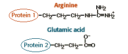
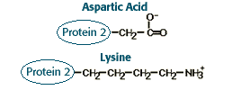
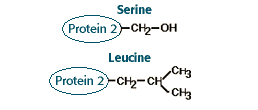

Large Molecules Problem Set
Problem 10: Protein-protein interactions
| Proteins 1 and 2 interact strongly. A significant part of the interaction is between the amino acid side chains shown below. | |
|  | |
| Assume that a mutation occurs in protein 2 that changes the amino acid shown above to one of the amino acids shown below. | |
|  |  |
A. The most: aspartic acid; the least: leucineB. The most: lysine; the least: serine
C. The most: Serine; the least: aspartic acid


Department of Biochemistry and Molecular Biophysics
The University of Arizona
Revised: February 5, 2003
Contact the Development Team
http://www.biology.arizona.edu
All contents copyright © 1996-2003.
All rights reserved.